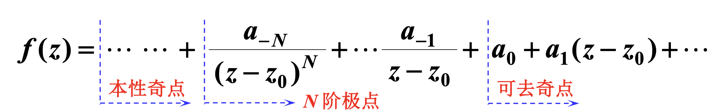

留数及其运用
基础知识
零点
设函数 \(f(z)\) 在 \(z_0\) 处解析，
(1) 若 \(f(z_0) = 0\)，则称 \(z = z_0\) 为 \(f(z)\) 的零点；
(2) 若 \(f(z) = (z - z_0)^m \varphi(z)\)，\(\varphi(z)\) 在 \(z_0\) 处解析且 \(\varphi(z_0) \neq 0\)，则称 \(z = z_0\) 为 \(f(z)\) 的 \(m\) 阶零点。
判断零点阶数的方法
- 求导：若函数 \(f(z)\) 在 \(z_0\) 处解析，且满足 \(f(z_0) = f'(z_0) = \cdots = f^{(m-1)}(z_0) = 0\)，但 \(f^{(m)}(z_0) \neq 0\)，则称 \(z_0\) 是 \(f(z)\) 的 \(m\) 阶零点。
- 泰勒展开：若函数 \(f(z)\) 在 \(z_0\) 处可表示为 \(f(z) = (z - z_0)^m \varphi(z)\)，其中 \(\varphi(z)\) 在 \(z_0\) 处解析且 \(\varphi(z_0) \neq 0\)，则称 \(z_0\) 是 \(f(z)\) 的 \(m\) 阶零点。
孤立奇点
设\(z_0\)为\(f(z)\)的奇点，且存在\(\delta > 0\)，使得\(f(z)\)在去心邻域\(0 < |z - z_0| < \delta\)内解析，则称\(z_0\)为\(f(z)\)孤立奇点。
人话：一个奇点边上没有其他奇点挨着。
孤立奇点的分类
设 \(z_0\) 是函数 \(f(z)\) 的孤立奇点，则在 \(z_0\) 的某个去心邻域 \(0 < |z - z_0| < R\) 内，\(f(z)\) 可以展开为洛朗级数：
根据负幂项的情况，孤立奇点分为三类：
- 可去奇点：洛朗展开式中不含负幂项（\(a_n = 0, \forall n < 0\)）。
- 极点：洛朗展开式中只含有限个负幂项。
- 若 \(a_{-m} \neq 0\)，而 \(a_n = 0\) 对所有 \(n < -m\)，则 \(z_0\) 称为 \(m\) 阶极点
- 本性奇点：洛朗展开式中含有无穷多个负幂项。
如何进行孤立奇点的分类：
洛朗级数展开

- 可去奇点：若 \(\lim\limits_{z \to z_0} f(z) = c\) (常数)。
- 极点：若 \(\lim\limits_{z \to z_0} f(z) = \infty\)。
- 更精确地，若 \(f(z)\) 在 \(z_0\) 处的洛朗级数展开式为 \(f(z) = \dfrac{a_{-N}}{(z-z_0)^N} + \cdots + \dfrac{a_{-1}}{z-z_0} + a_0 + a_1(z-z_0) + \cdots\)，其中 \(a_{-N} \neq 0\) 且 \(N \ge 1\)，则称 \(z_0\) 为 \(f(z)\) 的 \(N\) 阶极点。
- 本性奇点：若 \(\lim\limits_{z \to z_0} f(z)\) 不存在且不为 \(\infty\)。
判断极点阶数的方法：
- 若 \(f(z)=\frac{\varphi(z)}{(z-z_0)^m}\)，其中 \(\varphi(z)\) 在 \(z_0\) 点的邻域内解析，且 \(\varphi(z_0)\neq 0\)，则 \(z_0\) 为 \(f(z)\) 的 \(m\) 阶极点。
- 若 \(f(z)=\frac{P(z)}{Q(z)}\)，且 \(z_0\) 是 \(P(z)\) 的 \(n\) 阶零点，是 \(Q(z)\) 的 \(m\) 阶零点，即 \(P(z)=(z-z_0)^n P_1(z)\) 且 \(Q(z)=(z-z_0)^m Q_1(z)\)，其中 \(P_1(z_0) \neq 0\) 且 \(Q_1(z_0) \neq 0\)。
- 当 \(n \ge m\) 时，\(z_0\) 为 \(f(z)\) 的可去奇点。
- 当 \(n < m\) 时，\(z_0\) 为 \(f(z)\) 的 \((m - n)\) 阶极点。
注意！！！如下判断本性奇点的方法是有问题的
\(f(z)=g\left(\frac{\varphi(z)}{\psi(z)}\right)\xrightarrow{\text{函数 }g(z)\text{连续}}\begin{cases} \lim\limits_{z\to z_0}f(z)=g(c)&\text{可去奇点},\\ \lim\limits_{z\to z_0}f(z)=g(\infty)&\text{本性奇点?} \end{cases}\)
例如：\(f(z) = \frac{1}{z}\)。当\(z \to 0\)时，\(\frac{1}{z} \to \infty\)。这是一个一阶极点。
留数的定义
函数 \(f(z)\) 在孤立奇点 \(z_0\) 处的洛朗展开式中，\((z - z_0)^{-1}\) 项的系数 \(a_{-1}\) 称为 \(f(z)\) 在 \(z_0\) 处的留数，记作：
留数定理
设函数 \(f(z)\) 在区域 \(D\) 内除有限个孤立奇点 \(z_1, z_2, \ldots, z_n\) 外处处解析，\(C\) 是 \(D\) 内包围所有奇点的一条正向简单闭曲线，则：
留数的计算方法
1. 可去奇点
留数为 \(0\)。
2. 一阶极点
若 \(z_0\) 是 \(f(z)\) 的一阶极点，则：
特别地，若 \(f(z) = \frac{P(z)}{Q(z)}\)，其中 \(P(z_0) \neq 0\)，\(Q(z_0) = 0\)，\(Q'(z_0) \neq 0\)，则：
3. \(m\) 阶极点
若 \(z_0\) 是 \(f(z)\) 的 \(m\) 阶极点，则：
4. 本性奇点
需要展开洛朗级数，找出 \((z - z_0)^{-1}\) 项的系数。
5. 无穷远点的留数
若 \(f(z)\) 在 \(|z| > R\) 内解析，则在无穷远点的留数为：
其中 \(a_{-1}\) 是 \(f(z)\) 在 \(\infty\) 处洛朗展开式 \(f(z) = \sum_{n=-\infty}^{\infty} a_n z^n\) 中 \(z^{-1}\) 的系数。
提示： 注意无穷远点留数的定义中本身带有一个负号。 即 \(\text{Res}[f(z), \infty] = -a_{-1}\)，这与有限远点 \(z_0\) 处的留数 \(a_{-1}\) 定义符号相反。这是因为积分方向（顺时针包围无穷远点）导致的。 另外，若 \(f(z)\) 在扩充复平面上只有有限个奇点，则所有奇点（包括无穷远点）的留数之和为 \(0\)。这常用来反求某个难求的留数。
留数定理的应用
计算实积分
类型一：三角函数有理式的积分
形式：\(I = \int_0^{2\pi} R(\cos\theta, \sin\theta) \, d\theta\)，其中 \(R(\cos\theta, \sin\theta)\) 是关于 \(\cos\theta\) 和 \(\sin\theta\) 的有理函数。
计算方法：
- 变量替换：令 \(z = e^{i\theta}\)，则：
- \(\cos\theta = \frac{z + z^{-1}}{2} = \frac{z^2 + 1}{2z}\)
- \(\sin\theta = \frac{z - z^{-1}}{2i} = \frac{z^2 - 1}{2iz}\)
-
\(d\theta = \frac{dz}{iz}\)
-
转化为单位圆上的积分：当 \(\theta\) 从 \(0\) 到 \(2\pi\) 变化时，\(z\) 沿单位圆 \(|z| = 1\) 逆时针绕行一周。因此：
-
求奇点和留数：找出被积函数在单位圆内的所有孤立奇点，计算每个奇点的留数。
-
应用留数定理：
类型二：无穷积分
形式：\(I = \int_{-\infty}^{\infty} R(x) \, dx\)
令
（1）\(Q(z)\)比\(P(z)\)至少高两次，
（2）\(Q(z)\)在实轴上无零点，
（3）\(R(z)\)在上半平面\(\operatorname{Im} z>0\)内的极点为\(z_{k}(k=1,2, \cdots, n)\)，则有
类型三：含三角函数或指数函数的无穷积分
形式：\(I = \int_{-\infty}^{\infty} R(x) \cos(ax) \, dx\) ， \(\int_{-\infty}^{\infty} R(x) \sin(ax) \, dx\) 或 \(\int_{-\infty}^{\infty} R(x)e^{iax}dx\)，其中 \(a > 0\)
适用条件：与类型二类似，由 Jordan 引理条件 1 可放宽为 \(f(z)\) 为真分式。
例题
\(\text{Res}\left[\cos \frac{z}{z - 1}, 1\right] =\)
将 \(\sin \frac{1}{z-1}\) 展开即可得到 \((z-1)^{-1}\) 的系数是 \(-\sin 1\)。
即留数为 \(-\sin 1\).
求积分
三角公式降低分子的次数即可，答案为\(\frac{\pi (1-3\text{e}^{-2})}{4}\)。
设 \(f(z)\) 为复平面上的解析函数，则 \(\text{Res}\left[\left(\frac{1}{z} + \frac{1}{z^2}\right)f(z), 0\right] = (\quad)\)
直接洛朗级数展开，答案为\(f(0) + f'(0)\)
设 \(f(z) = z^4 \text{e}^{\frac{1}{z}}\)，则 \(\text{Res}[f(z), 0] = \underline{\quad\quad}\)。
同样，直接展开，答案为\(\frac{1}{120}\)。
求 \(\oint_{C} \overline{z}^{2}\text{e}^{-3z}\text{d}z\)（其中 \(C\) 为圆周 \(|z|=1\) 的正向）的值.
解 因 \(z\overline{z}=|z|^{2}=1\)，所以在圆周 \(|z|=1\) 上，\(\overline{z}=\frac{1}{z}\). 故被积函数 \(\overline{z}^{2}\text{e}^{-3z}\) 变为 \(\frac{\text{e}^{-3z}}{z^{2}}\). 该函数在 \(|z|=1\) 内仅 \(z=0\) 为二阶极点. 被积函数的洛朗展开式为：
其中 \(\frac{1}{z}\) 项（留数）系数为 \(-3\).
根据留数定理，沿正向闭曲线 \(C\) 的积分
计算 \(\oint_{|z-\frac{3}{2}|=1} \frac{z+\mathrm{e}^{z}}{\cos z} \mathrm{d} z\) 的值.
被积函数为 \(\frac{z+e^{z}}{\cos z}\)，在圆 \(|z-\frac{3}{2}|=1\) 内，余弦函数的零点为 \(z=\frac{\pi}{2}\)（因 \(\cos \frac{\pi}{2}=0\) 且 \(|\frac{\pi}{2}-\frac{3}{2}|<1\)）。
该点为简单极点，留数计算如下： \(\text{Res}\left( \frac{z+e^{z}}{\cos z},\frac{\pi}{2} \right)=\lim_{z \to \frac{\pi}{2}}(z-\frac{\pi}{2})\frac{z+e^{z}}{\cos z}=-\left( \frac{\pi}{2}+e^{\frac{\pi}{2}} \right)\)
由留数定理，积分值为： \(\oint_{|z-\frac{3}{2}|=1}\frac{z+e^{z}}{\cos z}dz=2\pi i \times \left( -\left( \frac{\pi}{2}+e^{\frac{\pi}{2}} \right) \right)=-2\pi i \left( \frac{\pi}{2}+e^{\frac{\pi}{2}} \right)\)
答案： \(-2\pi i \left( \frac{\pi}{2}+e^{\frac{\pi}{2}} \right)\)
计算积分\(\int_{0}^{+\infty} \frac{x \sin(4x)}{(x^2 + 1)(x^2 + 4)}\text{d}x\)的值.
可以使用留数定理求得
\(\int_{-\infty}^{\infty} \frac{x e^{i4x}}{(x^2+1)(x^2+4)} dx = 2\pi i \left( \frac{e^{-4}}{6} - \frac{e^{-8}}{6} \right) = \frac{\pi i (e^{-4} - e^{-8})}{3}\)。
取虚部，我们得到：
\(\text{Im} \left( \int_{-\infty}^{\infty} \frac{x e^{i4x}}{(x^2+1)(x^2+4)} dx \right) = \frac{\pi (e^{-4} - e^{-8})}{3}\)。而原函数是偶函数。因此，我们有：
\(\int_{0}^{\infty} \frac{x \sin(4x)}{(x^2+1)(x^2+4)} dx = \frac{1}{2} \cdot \frac{\pi (e^{-4} - e^{-8})}{3} = \frac{\pi (e^{-4} - e^{-8})}{6}\)。
（实轴上有奇点的情况）计算积分 \(\int_{0}^{+\infty} \frac{\sin 2x}{x(1+x^2)}\text{d}x\).
在线路内只有奇点\(z=\text{i}\)，因而
\(C_r\) 是 \(|z|=r\left(r=\frac{1}{2}R\right)\) 的上半圆周,故
从而

计算积分 \(\int_{0}^{+\infty} \frac{\sin^3 x}{x^3} \mathrm{d}x\).
降低分子次数得
取类似于上上题的积分路径，使 \(C\) 内无奇点，即当 \(R \to \infty\)，\(r \to 0\) 时，
而 \(\int_{C_{R}}=0\), 故
从而
证明 \(\int_{0}^{+\infty} \frac{\mathrm{d}x}{1+x^{n}}=\frac{\pi}{n \cdot \sin \frac{\pi}{n}}\)（\(n \geq 2\),\(n\) 为整数）.
取\(R(z)=\frac{1}{1+z^n}\)，它的一阶极点为\(\mathrm{e}^{\mathrm{i}\frac{\pi}{n}},\cdots,\mathrm{e}^{\mathrm{i}\frac{2n-1}{n}\pi}\)，有\(n\)个。当\(n \geq 2\)时，点\(\mathrm{e}^{\mathrm{i}\frac{\pi}{n}}\)总位于上半平面。为此选积分线路如图，在闭曲线内只有\(R(z)\)的一个奇点\(\mathrm{e}^{\mathrm{i}\frac{\pi}{n}}\)。这时有
当\(R \to \infty\)时，\(\int_{C_R} R(z)dz = 0\). 而在\(L\)上，令\(z = re^{\text{i}\frac{2\pi}{n}}\)，有
而
则
即